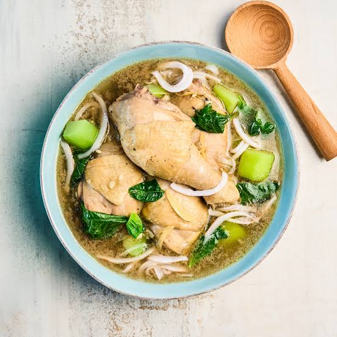

|
|
Chicken Binakol

A traditional chicken soup cooked with coconut water. Binakol is a chicken soup where the addition of fresh coconut meat and stewing it in coconut water makes it unique, delivering a sweet, savory broth unlike any other. Fragrant with lemongrass and ginger, light yet deeply nourishing, it is the Visayas in a bowl.
The recipe for Binakol can be traced back to the indigenous people of the Aklan and Antique provinces. It was originally prepared using native chickens and cooked in bamboo segments to infuse the dish with a distinct smoky flavor. Long before modern kitchens, the forests and coconut groves of Western Visayas provided everything the Bisakol people needed: a freshly cut bamboo node as the pot, coconut water as the broth, and native chicken as the heart of the dish. The origins of Chicken Binakol go back to pre-colonial times in the Philippines, when coconut was an important part of the Visayan diet, reflecting the traditional practices of Filipino cooking.
INGRIDIENTS:
Bone-in chicken (traditionally native chicken like darag), young coconut water (buko juice), young coconut meat, lemongrass, ginger, garlic, onion, fish sauce (patis), green papaya or chayote, and chili leaves (or malunggay).
INSTRUCTIONS:
1. Cut the stem and leaf ends of the lemongrass. Peel a few layers to get to the white part. Cut into 2-inch lengths and pound until with the back of a knife to release flavor. Set aside.
2. In a pot over medium heat, heat oil. Add onions, garlic, and ginger. Cook until softened.
3. Add chicken and cook until color changes and juices run clear.
4. Add fish sauce and cook for about 1 minute.
5. Add coconut juice and bring to a boil, skimming any scum that may float on top.
6. Add lemongrass.
7. Lower heat, cover and continue to cook for about 20 to 25 minutes or until chicken is cooked through.
8. Add papaya and cook for about 3 to 5 minutes or until tender.
9. Add coconut meat and cook until heated through.
10. Season with salt and pepper to taste.
11. Add spinach leaves, pushing down into the broth. Turn off heat and cover pot. Serve hot.
|